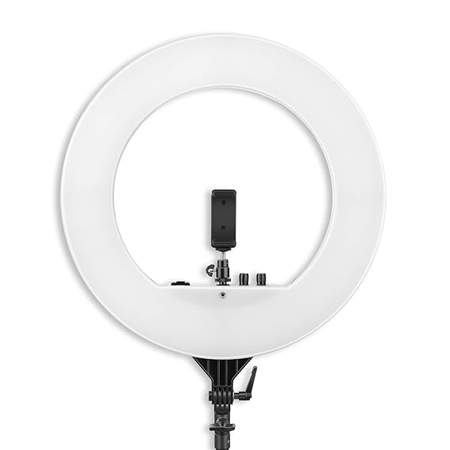
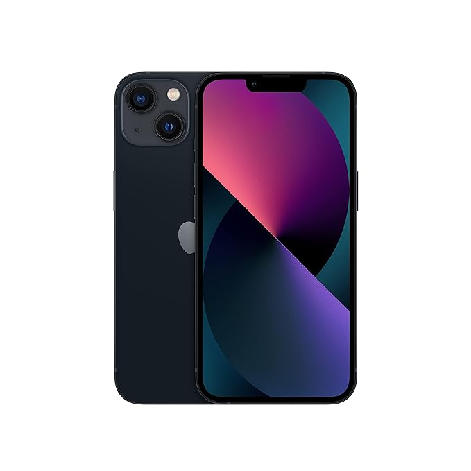
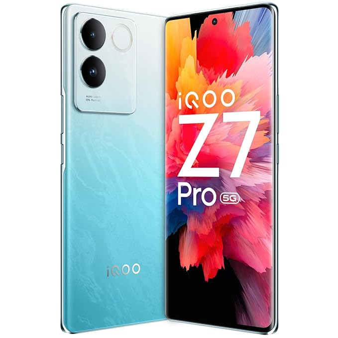
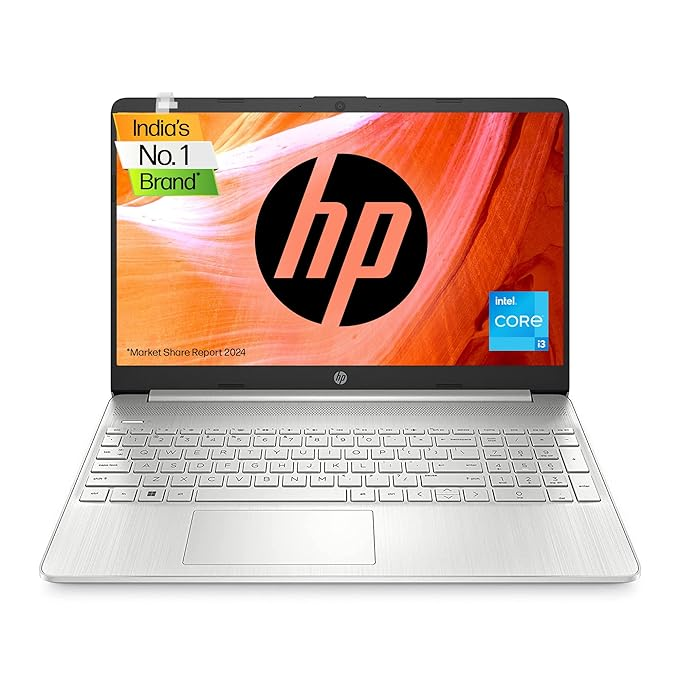

Products
At our affiliate website, we pride ourselves on curating a selection of top-quality products available on Amazon.
As an affiliate partner, we bring you the convenience of browsing through an array of exceptional items conveniently aggregated in one place.
Our commitment lies in presenting you with a diverse range of products meticulously sourced from Amazon's vast marketplace.
Whether you're searching for electronics, home goods, fashion essentials, or any other category,
rest assured that each item showcased on our platform meets the high standards synonymous with Amazon's renowned quality and reliability.
Explore our carefully curated selection at the top of our products page and discover the convenience and peace
of mind that comes with shopping through our trusted affiliate links.
Cameras
Discover unparalleled imaging prowess with our top-tier cameras.
Whether you're a seasoned photographer or an enthusiastic beginner, we provide the best tools to capture life's moments in exceptional detail.
Explore our curated selection of DSLRs, mirrorless cameras, and more, and unleash your creativity today.
Best Cameras under 80k-60k
i)Canon Digital Camera EOS R50
The Canon EOS R50 is a compact and versatile camera ideal for vlogging,
featuring a 24.2MP APS-C sensor, 4K video recording, and a RF-S18-45mm lens kit.
It's equipped with advanced autofocus, image stabilization for smooth footage,
and supports live streaming and vertical video for social media. Perfect for both beginners
and seasoned creators looking to capture high-quality content.
ii)Canon EOS R10
The Canon EOS R10 is a feature-rich mirrorless camera with a 24.2MP APS-C sensor, capable of 23 fps continuous shooting and 4K video recording.
It boasts next-gen autofocus, advanced image stabilization, and a vari-angle touchscreen, making it ideal for both photography and vlogging.
The camera also offers a range of white balance settings and supports HDR PQ for improved image quality, all in a user-friendly package.
ii)Sony Alpha ILCE-6400L
The Sony Alpha ILCE-6400L is a compact mirrorless camera with a 24.2MP APS-C sensor, known for its fast autofocus and continuous shooting capabilities
at 11 frames per second. It comes with a 16-50mm power zoom lens, ideal for both stills and video recording. Its high ISO sensitivity and real-time eye
autofocus make it a great choice for various shooting conditions.
iv)Sony Alpha ZV-E10L
 The Sony Alpha ZV-E10L is a mirrorless camera tailored for vloggers, featuring a 24.2MP APS-C sensor. It offers 4K video recording without crop at 24p and
a slight crop at 30p. The camera includes Sony's Cinema Picture Profiles and S-Log options for advanced video editing. It’s equipped with a 3-capsule
directional microphone and ports for headphones and external mics, ensuring high-quality audio capture. The ZV-E10L also supports real-time Eye AF and
AF tracking, making it a solid choice for content creators.
The Sony Alpha ZV-E10L is a mirrorless camera tailored for vloggers, featuring a 24.2MP APS-C sensor. It offers 4K video recording without crop at 24p and
a slight crop at 30p. The camera includes Sony's Cinema Picture Profiles and S-Log options for advanced video editing. It’s equipped with a 3-capsule
directional microphone and ports for headphones and external mics, ensuring high-quality audio capture. The ZV-E10L also supports real-time Eye AF and
AF tracking, making it a solid choice for content creators.
Best Cameras under 50k-30k
i)Canon Digital Camera EOS R100
The Canon EOS R100 is a compact and lightweight mirrorless camera equipped with a 24.1MP APS-C CMOS sensor.
It offers an ISO range from 100 to 12,800 (expandable to 25,600) and features Dual Pixel CMOS AF with eye detection
for precise focusing. You can capture 4K videos at 25p or 24p, and the Movie Digital IS ensures stable footage.
With an intuitive interface, vertical recording option, and silent shutter mode,it's suitable for both beginners and enthusiasts.
The camera weighs approximately 356g and includes a 3.0-inch color LCD display.
Overall, the Canon EOS R100 combines portability with impressive features for creative photography. 📸✨
ii)Panasonic LUMIX G7
The Panasonic LUMIX G7 features a 16.00 MP Four Thirds CMOS sensor and can record 4K (UHD) video at up to 100Mbps. Its Depth From Defocus (DFD)
Auto Focus (AF) technology ensures fast and precise focusing. With 8 frames per second continuous shooting, a 3.0-inch free-angle touchscreen LCD,
and built-in Wi-Fi, it's a versatile choice for creative photography. The bundled 14-42mm f/3.5-5.6 kit lens completes this portable package. 📸
Microphones
Elevate your audio recordings with our premium microphones! From crystal-clear sound reproduction
to durable designs, we offer versatile options for
every need. As an Amazon affiliate, we bring you the best selections
with seamless shopping experiences. Experience professional-grade quality
without breaking the bank. Upgrade your setup today and unleash your creativity with Lumelens!
Best Wireless Microphones Under 20k-10k
i)Digitek DWM 101
The Digitek DWM 101 is a wireless microphone system that’s known for its advanced features. It has a built-in noise reduction system that
filters out background noise, providing clearer audio. The microphone can pick up sound from all directions, thanks to its 360° sound capture feature.
It has a range of up to 100 meters, which gives you a lot of flexibility during use. The system is designed for quick and easy setup with automatic pairing features.
It uses high-performance 2.4G technology for seamless wireless transmission. The microphone system is equipped with Type C charging for fast and efficient power replenishment.
Additionally, it can connect and use external wired microphones for added versatility.
ii)Rode Wireless GO
The Rode Wireless GO II Single Channel Wireless Microphone System is a compact, versatile audio device ideal for various content creation.
It features RØDE’s Series IV digital transmission, providing clear wireless audio up to 200m. It records two individual channels of audio
to various devices and includes a safety channel for perfect audio levels. Its universal compatibility and on-board recording capabilities
make it a reliable choice for filmmakers, interviewers, and reporters.
iii)Digitek DWM-102
The Digitek DWM-102 is a professional wireless microphone system designed for use with smartphones and DSLR cameras. It features a built-in 3.7V /
1800mA Li-Poly Battery on the power charging compartment and a built-in 3.7V / 300mA Li-Poly Battery on the host, which can work for up to 12 hours.
The system also includes a DC 5V/1-2A Type C power adapter and a built-in V 5.3 Bluetooth. One of its key features is the built-in DSP Chip, which
intelligently filters noise to provide professional full-frequency audio quality. The system is plug-and-play, offering automatic pairing. It ensures
signal transmission with low latency and without interruption, making it suitable for video shooting.
Best Microphones Under 15k-5k
i)Blue Yeti USB Microphone
The Blue Yeti USB Microphone is a premium multi-pattern microphone that has been a favorite among creators for its broadcast-quality sound.
It’s equipped with a custom three-capsule array that produces clear, powerful audio for various applications such as YouTube videos, Twitch
game streaming, podcasting, Zoom meetings, and music recording. The microphone offers four pickup patterns - cardioid, omni, bidirectional,
and stereo, allowing you to record in ways that would normally require multiple microphones. It also features onboard audio controls for
headphone volume, pattern selection, instant mute, and mic gain. The Yeti microphone has an internal shockmount that protects the 3-capsule
array and helps keep your content focused on your voice. It’s designed for plug-and-play simplicity, allowing you to set up the microphone in
seconds with the included desktop stand or connect directly to a mic stand or boom arm and instantly start recording or streaming on Mac or PC.
ii)Rode NT-USB Mini
The Rode NT-USB Mini is a compact, studio-quality USB microphone that brings the pristine sound quality of Rode’s world-class studio mics to
your desktop. It’s designed to deliver crystal-clear, professional-quality audio direct to a computer or tablet, making it an ideal choice for
gamers, podcasters, musicians, streamers, and content creators. The microphone features a high-quality condenser capsule that delivers warmth
and presence in your recordings, a studio-grade headphone amplifier, and a high-quality 3.5mm headphone output with precision volume control
for easy audio monitoring. It also includes a switchable zero-latency monitoring mode to eliminate distracting echo when recording.
The NT-USB Mini is easy to set up and use, with simple controls, an in-built pop filter, and a class-compliant USB output that works seamlessly
with computers or tablets, no drivers or software needed. It also features a unique detachable magnetic desk stand for easy free-standing
operation and a 360-degree swing mount for flexible positioning. Despite its compact size, the NT-USB Mini is built to last, with hard-wearing
steel and reinforced nylon resin construction.
iii)Sennheiser Profile USB Microphone
The Sennheiser Profile USB Microphone is a high-performance device designed with a focus on audio quality and design. It features a cardioid
condenser capsule and is powered by USB-C, making it compatible with macOS, iPadOS, Windows, and Android. The microphone is equipped with gain
control for adjusting the microphone level, mix control for balancing the microphone with your device audio, and volume control for setting your
headphone monitoring level. It also has an adjustable tilt function for optimal positioning, a mute button with an LED ring indicator, and a robust
metal housing with a premium finish. The package includes the microphone, a table stand, and a 1.2m USB-C cable. The microphone operates at a
frequency range of 20 to 20,000 Hz and can handle a maximum SPL of 125 dB at max gain and 85 dB at min gain. It weighs 350g and the table stand
weighs 60g.
Softbox
A softbox is a type of photographic lighting device, often used in studio or outdoor photography, to create a soft, natural-looking light.
It consists of a reflective interior and a light diffusing material at the front, which scatters the light and reduces harsh shadows.
The design of a softbox is such that it encloses a light source, such as a flash tube or bulb, directing the light towards the subject while
controlling its spread. The size and shape of the softbox can greatly affect the quality and direction of light, with larger softboxes producing
softer light and smaller ones resulting in a harder light. Softboxes can be square, rectangular, or octagonal in shape, each providing a different
quality of light and shadow effect. They are versatile tools that can be used for various types of photography, from portraits to product shots,
and are a staple in many professional photographer’s gear. The use of a softbox can significantly improve the quality of lighting in photographs,
making them an essential tool for both amateur and professional photographers.
Best Softbox Under 10k-1k
i)DIGITEK (55cm) Portable SoftBox
The DIGITEK (55cm) Lightweight & Portable Soft Box is a highly rated product that is appreciated for its portability and lightweight design.
It comes with an S2 type bracket and two diffuser sheets, making it compatible with all flash speedlights. The product has received positive
reviews for its quality and value for money. Users have praised its good build and light weight, making it easy to use for both indoor and
outdoor photography. The soft box also features an inner silver lining cloth and an outer black cloth, both of which are of good quality.
However, some users have expressed concerns about the durability of the inner thin rods, fearing they may get damaged over time. Despite this,
the product has a mechanism for closing by pressing a plastic button, which users have found to be convenient.
ii)HIFFIN Trilux Mark II Double Kit
The HIFFIN Trilux Mark II Double Kit is a professional lighting solution designed for various photography situations like portraiture,
video shooting, product photography, and fashion photography. This kit includes two LED video lights with AC power cords, two 50cm x 70cm big
softboxes, two light stands, and a bag for the kit. The softboxes, which are 50 x 70cm in size, are designed to soften the light stream
and remove shadows, making the shooting perfect. They have a silver internal face to minimize light loss and maximize light spread.
With an E27 socket, you can directly connect light bulbs, fluorescent lamps, or slave flash to offer the light. The softbox lighting angle
can be adjusted up to 270 degrees, and it comes with a 1/4-inch standard screw thread tip. The kit also includes two adjustable light stands
that can be folded to 36 inches or expanded to 96 inches. This kit is lightweight and easy to set up, making it ideal for YouTubers, filmmakers,
and general photography including portraits, group shots, glamour, and product photography. The HIFFIN Trilux Mark II Double Kit is praised for
its solid build quality, powerful lights, portability, and versatility. It offers excellent light quality and overall sturdiness, making it a
great deal for photographers and videographers.
iii) GiftMax LED Soft Light Panel
The GiftMax LED Video Soft Light Panel is a versatile lighting solution that has garnered positive reviews for its performance and features.
It’s particularly appreciated by YouTubers, online educators, and photographers for its excellent light quality and adjustable color temperature
ranging from 2700K to 5700K. The panel comes with a 7ft stand, making it a convenient choice for both indoor and outdoor shoots. However,
it’s worth noting that the light operates only through a wire and does not support battery operation, which might limit its usability for
outdoor shoots. Users have also reported that the remote control could be improved and that the light tends to heat up after about 30 minutes
of usage. Despite these minor drawbacks, the GiftMax LED Video Soft Light Panel is considered a good value for money, especially for those
seeking professional-grade lighting under a budget.
Ringlight
Ring lights are a popular choice for photographers, videographers, vloggers, and content creators due to their ability to provide soft,
flattering, and continuous lighting. These donut-shaped devices, which come in various sizes and setups, use LED lighting to produce a
diffused glow that enhances the quality of videos and photos. They are particularly effective in eliminating unflattering shadows, making
the subject look their best on screen. Ring lights are also appreciated for their ability to adjust the color temperature to suit
different skin tones and ambient lighting conditions, making them versatile for various shooting scenarios. They can be used with both cameras
and smartphones, and are often equipped with features like Bluetooth connectivity for lighting adjustment and FX options. Despite their
simplicity, ring lights can significantly improve the quality of visual content, whether it’s for a professional photoshoot, a YouTube video,
a Zoom call, or a selfie for social media.
Best Ringlights Under 10k-1k
i) DIGITEK DRL 018H

The DIGITEK (DRL 018H) 18 Inch LED Ring Light is a professional-grade lighting solution that offers AC/DC power options.
It features adjustable color temperature and lighting intensity controls, making it a versatile choice for various lighting needs.
The ring light comes with 240 pieces of LED bulbs and a special LED SMD design, providing high-quality, diffused lighting for
photo and video shoots, makeup applications, and YouTube videos. It also includes a 180° rotation feature and a USB power option
for added convenience. The light is lightweight and portable, and it comes with a hot shoe adapter to help secure the camera or
phone holder onto the ring light. Despite its affordability, the DIGITEK (DRL 018H) does not compromise on performance, making
it a popular choice among professionals and enthusiasts alike.
ii) DIGITEK DRL-14C
 The DIGITEK (DRL-14C) 14 Inch LED Ring Light is a versatile lighting solution for photo and video shoots, makeup, and vlogging.
It comes with a 5ft stand and a smartphone mount, making it a comprehensive package for content creators. The ring light is USB
powered and features a color switch mode, allowing users to adjust the lighting according to their needs. It also offers brightness
control and dual temperature settings for added flexibility. The DRL-14C model is equipped with intensity control, color temperature
control, and a power button for easy operation. It also includes a light stand, mini tripod, ring light body, hot shoe mount, and
smartphone mount. The ring light provides no shadow apertures, which is a significant advantage for photo-video shoots requiring
specific lighting effects. Users can mount it to a grip head or light stand as needed. The product has received positive ratings
from customers for its ease of use and value for money.
The DIGITEK (DRL-14C) 14 Inch LED Ring Light is a versatile lighting solution for photo and video shoots, makeup, and vlogging.
It comes with a 5ft stand and a smartphone mount, making it a comprehensive package for content creators. The ring light is USB
powered and features a color switch mode, allowing users to adjust the lighting according to their needs. It also offers brightness
control and dual temperature settings for added flexibility. The DRL-14C model is equipped with intensity control, color temperature
control, and a power button for easy operation. It also includes a light stand, mini tripod, ring light body, hot shoe mount, and
smartphone mount. The ring light provides no shadow apertures, which is a significant advantage for photo-video shoots requiring
specific lighting effects. Users can mount it to a grip head or light stand as needed. The product has received positive ratings
from customers for its ease of use and value for money.
iii)DIGITEK (DRL-18RT C9)
The DIGITEK (DRL-18RT C9) is a professional 46cm LED Ring Light that comes with a remote and a 158cm light stand. It runs on
AC power and is designed to produce no shadow apertures, making it ideal for makeup, video shoots, and fashion photography.
The ring light features a 360-degree rotated intelligent phone holder, allowing you to angle your phone vertically or horizontally
without removing it from the holder. For photographers, a hot shoe adapter is included that fits onto a standard accessory shoe on
the stand. The DRL-18RT C9 offers dual color modes with a color temperature variable from 3200 to 5600k. It also comes with intensity
control, color temperature control, and a power button for easy operation.
Tripords
A tripod is a portable three-legged frame or stand, used as a platform for supporting the weight and maintaining the stability of some
other object. It’s typically used in photography and videography to stabilize and elevate a camera, a flash unit, or other photographic
equipment. All tripods have three legs and a mounting head to couple with a camera. The mounting head usually includes a thumbscrew that
mates to a female-threaded receptacle on the camera, as well as a mechanism to be able to rotate and tilt the camera when it is mounted
on the tripod. Tripod legs are usually made to telescope, in order to save space when not in use. Tripods are usually made from aluminum,
carbon fiber, steel, wood or plastic.
Best Tripords Under 5k-1k
i) DIGITEK (DTR 520 BH)
The DIGITEK® (DTR 520 BH) 152CM Foldable Aluminum Tripod is a versatile piece of equipment that doubles as a monopod. It features a swivel
pan head and a 4-section adjustment, allowing for a maximum operating height of 4.95 feet. The tripod is capable of supporting a maximum
load of 7kg, making it compatible with DSLR cameras and DV video camcorders. It’s designed with a multipurpose head that’s suitable for low-level
shooting and panning, and it’s particularly useful for DV camera work. Despite its robust capabilities, the tripod is lightweight and foldable,
making it easy to transport. However, it’s important to note that it’s not compatible with sliders and is best suited for cameras with small lenses.
It’s also worth mentioning that the tripod does not include a mobile holder. This tripod is highly rated by customers for its durability.
ii) DIGITEK (DTR 550 LW)
The DIGITEK (DTR 550 LW) 67 Inch Foldable Tripod Stand is a versatile and reliable piece of equipment for photographers and videographers. Crafted by Digitek,
it features durable aluminum alloy legs that provide stability and reliability. With a maximum height of 67 inches and a foldable design, it allows users to
achieve the perfect shot from various angles. It’s compatible with digital cameras, video cameras, DSLRs, projectors, and smartphones, offering adaptability
for diverse shooting needs. The tripod supports a maximum load of 5kg, ensuring your equipment stays safe and steady during use. It includes a mobile phone holder
and a carry bag for added convenience on the go. Equipped with flip locks and rubberized feet, it provides secure positioning on any surface. It also features a
3-way head with pan adjustment and a bubble head for precise horizontal positioning. This tripod is a great tool for both professional and amateur photographers
and videographers.
iii)DIGITEK (DPTR 895VD)
 The DIGITEK DPTR 895VD is a professional tripod cum monopod that is highly appreciated for its multipurpose head, making it suitable for low-level shooting and
panning for photography and videography. It is designed to support a variety of devices including DSLR, DV cameras, binoculars, film cameras, and advanced point
& shoot cameras. With a maximum load capacity of 5 kg, it can comfortably hold most camera setups. The tripod stands tall with a maximum height of approximately
6.39 feet, making it ideal for users of varying heights. It is also praised for its build quality, with users noting its sturdiness and durability. Despite its
robust construction, it remains lightweight at 590 grams when folded, making it easy to carry around in its accompanying carry bag.
The DIGITEK DPTR 895VD is a professional tripod cum monopod that is highly appreciated for its multipurpose head, making it suitable for low-level shooting and
panning for photography and videography. It is designed to support a variety of devices including DSLR, DV cameras, binoculars, film cameras, and advanced point
& shoot cameras. With a maximum load capacity of 5 kg, it can comfortably hold most camera setups. The tripod stands tall with a maximum height of approximately
6.39 feet, making it ideal for users of varying heights. It is also praised for its build quality, with users noting its sturdiness and durability. Despite its
robust construction, it remains lightweight at 590 grams when folded, making it easy to carry around in its accompanying carry bag.
Smartphones
Smartphones have become an indispensable tool for YouTube creators, serving as a versatile device for shooting, editing, and multitasking. With high-resolution
cameras and advanced filming features, smartphones enable creators to shoot professional-quality videos without the need for expensive equipment. They also offer
a range of editing apps that allow creators to edit their videos directly on the device, adding effects, transitions, and soundtracks to enhance their content.
Furthermore, smartphones support multitasking, allowing creators to manage their channel, interact with their audience, and monitor their analytics on the go.
Thus, smartphones play a crucial role in empowering YouTube creators to produce and manage high-quality content efficiently and conveniently.
Best Smartphones Under 50k-35k
i)Galaxy S21 FE 5G
The Samsung Galaxy S21 FE 5G (2023) is a powerful and stylish smartphone that comes with 8GB of RAM and 256GB of storage. It is powered by the
Snapdragon 888 Mobile Platform, which includes a Snapdragon X60 Modem-RF System for 5G speeds up to 7.5 Gbps. The device features a 16.29cm (6.4") display,
providing a large and vibrant viewing experience. The actual viewable area is slightly less due to the rounded corners and camera hole. The smartphone is
equipped with a 4500mAh battery, which has been tested under third-party laboratory conditions. The actual battery life may vary depending on network environment,
usage patterns, and other factors. The Galaxy S21 FE 5G is a great choice for those seeking a high-performance smartphone with a sleek design and advanced features.
ii)Vivo V29 Pro
The Vivo V29 Pro 5G Smartphone in Space Black comes with 8GB RAM and 256GB storage. This ultra-slim smartphone features a 3D curved display, offering an impressive
design and comfortable grip. It is powered by a MediaTek Dimensity 8200 chipset, allowing for seamless multitasking. The phone is equipped with a 50MP front camera and
a 50MP + 12MP + 8MP rear camera setup, including a 2X Pro Portrait lens with the Sony IMX 663 Sensor, which allows for brilliant photographs even at a distance of 0.5
to 2 meters. The camera system also includes a smart aura light with changing color temperatures, enhancing visual appeal and providing impressive lighting in both
extreme warm and cool lighting conditions. The device is powered by a 4600 mAh battery and supports 80W flash charging.
iii)Oneplus 12R
The OnePlus 12R Iron Gray with 8GB RAM and 128GB Storage is a budget-friendly smartphone that offers a high-quality phone experience without breaking the bank.
It is powered by a Qualcomm Snapdragon 8 Gen 2 processor and runs on Android 14 (OxygenOS 14). The device features a stunning 6.78-inch AMOLED ProXDR Display
with LTPO4.0, offering a resolution of 2780 x 1264 pixels. The OnePlus 12R is equipped with a long-lasting 5,500mAh battery and supports super-fast charging.
In terms of camera specifications, it has a 16MP front camera and a rear camera setup that includes a 50MP Sony IMX890 main sensor, an 8MP Ultrawide sensor,
and a 2MP Macro lens. Despite its competitive pricing, the OnePlus 12R offers excellent performance and a premium, high-end build and design.
iv)Iphone 13

The Apple iPhone 13 (128GB) - Midnight is a compelling choice for those seeking a blend of performance and value. It boasts a brighter display and longer battery
life compared to its predecessors, making it a strong contender in the smartphone market. The device’s powerful cameras, including the Cinematic video mode, offer
high-quality imaging capabilities. Despite not having the faster charging and adaptive 120Hz display found in the Pro models, the iPhone 13 still delivers a
class-leading performance. Its design is elegant and timeless, especially in the Midnight color, adding a touch of sophistication. The transition from Android to
Apple might not be very smooth for some users due to the differences in operating systems. However, the iPhone 13’s strong chipset and the Photographic Styles and
Cinematic camera upgrades it introduced allow it to keep up with the competition.
Best Smartphones Under 35k-20k
i)Oneplus 11R
The OnePlus 11R 5G in Sonic Black is a powerful and affordable device that comes with 8GB RAM and 128GB storage. It boasts a 120 Hz Super Fluid Display with a
resolution of 450 PPI and peak brightness of 1,450 nits, providing clear views no matter what content you watch. The device is powered by the Snapdragon® 8+ Gen 1
Mobile Platform, offering raw, understated power and efficient performance. The 50 MP IMX890 Triple Camera System allows for high-quality photography, and the
device also supports up to 18GB of RAM with the RAM-Vita feature for seamless multitasking. The OnePlus 11R 5G also features a 5000 mAh battery with 100W SUPERVOOC
fast charging, providing all-day power in just 10 minutes. The device’s design, with its sleek laser-sculptured curvature and understated shiny finish, is reminiscent
of modern high-performance sports cars and spacecraft. Overall, the OnePlus 11R 5G is a great choice for those seeking a high-performance, feature-rich smartphone.
ii)Galaxy A34
The Samsung Galaxy A34 5G is a vibrant device that comes in an Awesome Lime color. It boasts a generous storage capacity of 256GB, coupled with 8GB of RAM, ensuring
smooth performance for all your apps and files. One of its standout features is the 48 MP No Shake Camera with Optical Image Stabilization (OIS), which allows for clear
and steady photos and videos, even in motion. The device is also designed to withstand the elements with an IP67 rating, meaning it’s dust tight and can handle being
submerged in up to a meter of water for about 30 minutes. Lastly, the screen is protected by Gorilla Glass 5, providing enhanced damage resistance against drops and
scratches. All these features are packed into a sleek and stylish design, making the Samsung Galaxy A34 5G a compelling choice for any smartphone user.
iii) iQOO Z7 Pro

The iQOO Z7 Pro 5G in Blue Lagoon is a sleek and powerful smartphone that comes with 8GB RAM and 128GB storage. It features a stunning 3D Curved AMOLED Display that
provides an immersive viewing experience. The phone is powered by the 4nm MediaTek Dimesity 7200 5G Processor, ensuring smooth performance and seamless multitasking.
The iQOO Z7 Pro 5G also boasts a 64MP AURA Light OIS Camera that captures stunning photos and videos. The phone is known for being the segment’s slimmest and lightest,
making it comfortable to hold and use. It also includes an Extended RAM 3.0 feature, which provides an additional 8GB of RAM for enhanced performance. The phone is
equipped with a Vapour Chamber Liquid Cooling system to keep the device cool during intensive tasks. The iQOO Z7 Pro 5G is backed by a 4600mAh battery, ensuring
long-lasting usage. It also supports 66W FlashCharge, allowing for rapid charging of the device. The phone runs on Funtouch OS 13 based on Android 13.
iv) Oneplus Nord 3
The OnePlus Nord 3 5G, in its Misty Green variant, is a feature-rich smartphone that offers a combination of performance and style. It comes with 8GB RAM and 128GB storage,
ensuring smooth multitasking and ample space for your files and applications. The phone is powered by the MediaTek Dimensity 9000 processor, which provides fast and
efficient performance. The Nord 3 5G boasts a large 6.74-inch Super Fluid AMOLED display with a resolution of 2772 x 1240 pixels, offering vibrant colors and sharp visuals.
The device is equipped with a 50MP Sony IMX890 primary camera that captures high-quality photos and videos, along with an 8MP ultra-wide camera and a 2MP macro lens. The front
camera is a 16MP sensor, perfect for selfies and video calls. The phone runs on OxygenOS 13.1 based on Android 13, providing a smooth and user-friendly interface. It is backed
by a 5000mAh battery, supporting 80W SUPERVOOC fast charging.
Laptops
Laptops are an essential tool for YouTubers, serving as the central hub for content creation, editing, and distribution. With a laptop, YouTubers can script their
videos, record voiceovers, and edit footage, often using sophisticated software that requires a powerful processor and ample storage. Laptops also provide the
flexibility to work from anywhere, which is crucial for vloggers and travel YouTubers. Moreover, they enable seamless communication with fans and collaborators
through social media and email. High-quality webcams and microphones on laptops aid in live streaming, while the screen is used for monitoring the video quality
during recording. Thus, a laptop is not just a device for YouTubers, it’s their portable studio, communication center, and gateway to their audience.
Best Laptops Under 60k-40k
i)HP Victus Gaming Laptop
The HP Victus Gaming Laptop, model fb0106AX, is a high-performance device designed for gaming enthusiasts. It is powered by an AMD Ryzen 5 5600H processor
and features a 4GB RTX 3050 GPU, ensuring smooth gameplay and excellent graphics. The laptop boasts a 15.6-inch (39.6 cm) Full HD IPS display with a
refresh rate of 144Hz, providing a crisp and fluid visual experience. It comes with 8GB DDR4 RAM and a 512GB SSD, offering ample storage and efficient
multitasking capabilities. The backlit keyboard enhances usability in low-light conditions, while the B&O dual speakers deliver immersive audio.
With a 9ms response time, this laptop ensures quick and responsive performance. The laptop, finished in a striking blue color, weighs 2.37 kg,
making it a portable choice for gamers on the go.
ii)ASUS TUF F15
The ASUS TUF F15 is a powerful gaming laptop that offers a blend of performance and affordability. It’s equipped with a 12th gen Intel i7-12700H
processor and one of the latest Nvidia GeForce RTX 3060 graphics cards, making it capable of handling the latest gaming titles without a hiccup
at 1080p. The laptop also excels at productivity tasks, making it a versatile choice for both work and play. However, it’s not without its drawbacks.
The webcam, touchpad, and speakers could use some improvement, and some users have reported that games can appear washed out on the display. Despite
these minor issues, the ASUS TUF F15 remains a strong contender in the mid-range gaming laptop market, offering superb 1080p gaming capabilities at
a competitive price point. Its robust metallic body feels sturdy and heavy, capable of withstanding the day-to-day bumps of going in and out of a backpack,
or moving between rooms at home. The design is sleek and professional, with minimized branding on the lid and a streamlined design of the TUF shield at the
center. The laptop measures at 13.94 x 9.88 x 0.78 inches and weighs 4.41 pounds, making it a relatively portable option for a gaming machine. Overall,
the ASUS TUF F15 is a solid choice for those seeking a balance between performance, durability, and affordability in a gaming laptop.
iii)Lenovo ThinkPad E14
The Lenovo ThinkPad E14 is a business laptop that offers a blend of affordability and productivity. It’s known for its sturdy build, excellent backlit
keyboard, robust security features, and speedy performance, thanks to the 11th Gen Intel chips. The laptop comes with a long battery life, a three-year
warranty, and a touch screen, making it a great value for money. However, it does have a few downsides such as a bland design, tinny speakers,
a small touchpad, loud fans, and a mushy webcam picture. Despite these, the ThinkPad E14 stands out for its focus on delivering the essentials for
business users, offering a balance between performance and cost. It’s a part of Lenovo’s ThinkPad E-series, which is designed to deliver the everyday
essentials for home users, college students, and small businesses trying not to spend more than necessary. Overall, the Lenovo ThinkPad E14 is a capable
work laptop that doesn’t break the bank, making it a popular choice among budget-conscious business users.
iv)Acer Aspire Lite
The Acer Aspire Lite, powered by the AMD Ryzen 7 5700U, is a premium, thin, and light laptop that’s perfect for the on-the-go user who doesn’t want
to compromise on performance. It’s equipped with Windows 11 Home, 16 GB RAM, and a 1 TB SSD, providing ample speed and storage for all your
multitasking needs. The pre-installed Microsoft Office suite adds to its readiness for any task right out of the box. The 39.62 cm (15.6")
Full HD display ensures crisp and vibrant visuals, while the sleek Steel Gray metal body offers a professional look and durability. Weighing in
at just 1.6 kg, it’s an ideal travel companion for those who need reliable computing power in a portable package. Whether for work or play, the Acer
Aspire Lite stands out as a smart choice for modern professionals and students alike.
Best Laptops Under 40k-25k
i)Dell 14 Thin
The Dell 14 Thin & Light Laptop is a sleek and portable computing device powered by an AMD Ryzen R5-5500U processor, paired with 8GB of DDR4 memory
clocked at 2400 MHz to ensure smooth multitasking. It boasts a 512GB solid-state drive for quick data access and ample storage space. The laptop
features a 14.0-inch Full HD display with Comfort View technology, which reduces eye strain during prolonged use. It comes pre-installed with
Windows 11 and Microsoft Office 2021, offering a contemporary user experience with the latest productivity tools. Security is enhanced with a 15-month
subscription to McAfee antivirus. The spill-resistant keyboard is designed to withstand accidental liquid spills, making it ideal for on-the-go use.
Finished in a sophisticated carbon black color, the laptop weighs just 1.48kg, making it an excellent choice for professionals and students who need a
reliable and stylish laptop for everyday use.
ii)Lenovo Ideapad Slim 3
The Lenovo IdeaPad Slim 3, with its Intel Core i3 12th Gen processor, offers a balance of performance and portability, making it a suitable choice
for both students and professionals. Its 15.6-inch FHD display ensures crisp and clear visuals, while the 8GB RAM and 512GB SSD provide ample memory
and fast storage to handle everyday tasks efficiently. Preloaded with Windows 11 and Office 2021, it’s ready for productivity right out of the box.
The laptop also includes a 1-year Accidental Damage Protection, adding a layer of security for users on the go. Additionally, the 3-month Game Pass
offers entertainment options for downtime. All these features are packed into a thin and light design, weighing just 1.63Kg and finished in an elegant
Arctic Grey, making the IdeaPad Slim 3 a smart choice for those needing a reliable device that’s easy to carry around.
iii)Asus Vivobook 15
The ASUS Vivobook 15, model X1502ZA-EJ381WS, is a sleek and portable laptop that boasts a 12th Gen Intel Core i3-1220P processor, ensuring smooth
performance for everyday tasks. Its 15.6-inch Full HD display offers clear and vibrant visuals, while the thin design makes it easy to carry, weighing
just 1.7 kg. The laptop comes with 8GB of RAM and a 512GB SSD, providing ample space and speed for storage and multitasking. Pre-installed with
Windows 11 and Office 2021, it’s ready for productivity right out of the box. Additional features like an integrated fingerprint sensor for enhanced
security, and Alexa built-in for voice control, add to the convenience and modern experience of using the Vivobook 15.
iv)HP Laptop 15s

The HP Laptop 15s models fq5007TU and FQ5327TU are a testament to the seamless blend of style and substance, featuring a sleek silver chassis that
houses a powerhouse of performance. At the heart of these machines is the 12th Gen Intel Core i3 processor, which, when combined with 8GB DDR4 RAM,
provides a smooth and responsive user experience. The 15.6-inch (39.6 cm) Full HD display ensures crisp and vivid visuals, while the anti-glare
technology allows for comfortable use even in brightly lit environments. Storage is ample and swift with a 512GB SSD, making file access and system
boot-up remarkably fast. These laptops are not just about performance; they are also about convenience, with a backlit keyboard that enhances typing
accuracy in low-light conditions and a True Vision 720p HD camera that brings clarity to video calls. Dual speakers deliver an immersive audio
experience, and with Windows 11 and Microsoft Office 2021 pre-installed, they are ready for both work and play right out of the box. All this,
packed in a thin and light form factor weighing just 1.69 kg, makes the HP Laptop 15s an ideal companion for those who value productivity and portability.
Copyright © 2024 - 2025 Lumelens®. All rights reserved.
For any issue with the product contact Amazon's costumer care